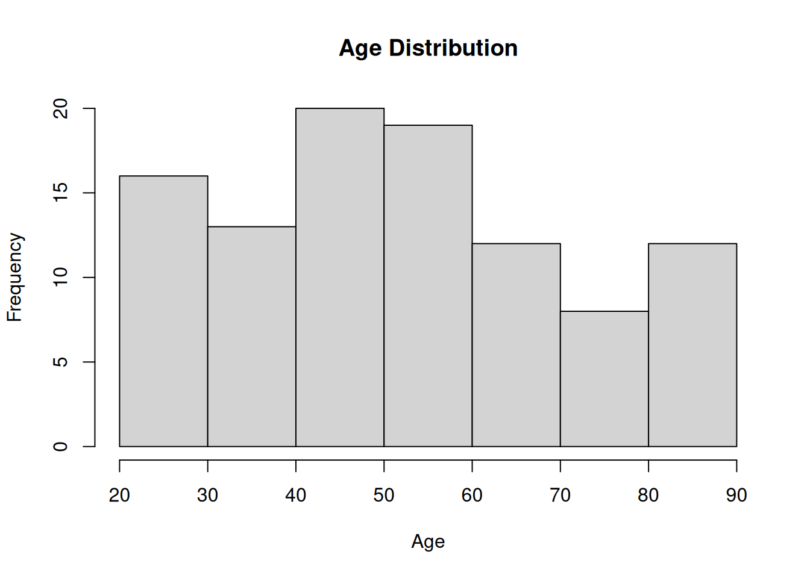

This lecture has avoided the term “programming” due to its intimidating connotation. While advanced programming is a specialized skill, the basics are accessible and can achieve impressive results. This chapter introduces basic programming concepts in R, a language you’ve been using interactively so far.
Programming is essentially writing instructions for a computer in a language it can interpret, as a cooking recipe in a language like R. You’ve been entering commands at the prompt, but you can also write a program using R commands. This means you’re close to being able to program in R at a beginner’s level.
Computer programs can take many forms, including scripts, which are of interest for everyday data analysis in R. Scripts involve writing all commands in a text file, which R can execute using the source() function.
Scripts are useful for several reasons. They allow you to save your work effectively, making it easier to correct mistakes without starting from scratch. They also let you leave notes for yourself, aiding recall of your analysis process. Finally, scripts make it easier to reuse or adapt your analyses for similar problems in the future.
The interactive style of entering commands one at a time has its uses, but also drawbacks. It’s challenging to save your work effectively, tedious to correct mistakes, and difficult to leave notes or reuse analyses. Scripts address these issues, making them a valuable tool for data analysis.
Write scripts using Rstudio
RStudio, a text editor designed for scripting, offers features like syntax highlighting and automatic source() command construction. It also supports R Markdown, allowing you to embed R code in a Markdown document and publish it online.
When writing scripts, it’s beneficial to include comments explaining the code. This aids understanding for others and future you. For instance, a script to analyze demographic_data.csv might include comments about its purpose, author, and date, as well as explanations of each section of code.
# --- csv_analysis.R# A script to analyse a CSV file# author: Andres Chamorro# date: Jun 26 2024# Load the necessary librarylibrary(readr)# Load the data from the CSV filedata <-read_csv("data/demographic_data.csv")
Rows: 100 Columns: 10
── Column specification ────────────────────────────────────────────────────────
Delimiter: ","
chr (7): Gender, Ethnicity, Education_Level, Occupation, Marital_Status, Res...
dbl (3): Age, Income, Household_Size
ℹ Use `spec()` to retrieve the full column specification for this data.
ℹ Specify the column types or set `show_col_types = FALSE` to quiet this message.
# Display the structure of the dataprint(str(data))
# Summary statistics for each columnsummary_stats <-summary(data)print(summary_stats)
Age Gender Ethnicity Income
Min. :21.00 Length:100 Length:100 Min. :19787
1st Qu.:38.75 Class :character Class :character 1st Qu.:41248
Median :51.00 Mode :character Mode :character Median :50342
Mean :52.63 Mean :50920
3rd Qu.:67.25 3rd Qu.:61123
Max. :89.00 Max. :84396
Education_Level Occupation Marital_Status Household_Size
Length:100 Length:100 Length:100 Min. :1.00
Class :character Class :character Class :character 1st Qu.:2.00
Mode :character Mode :character Mode :character Median :3.00
Mean :3.37
3rd Qu.:5.00
Max. :6.00
Residence_Location Housing_Tenure
Length:100 Length:100
Class :character Class :character
Mode :character Mode :character
# If there are any specific columns you want to analyze, you can do so. # For example, if you have a column named 'Age', you can find its mean like this:mean_age <-mean(data$Age, na.rm =TRUE) # 'na.rm = TRUE' is used to ignore NA valuesprint(paste("Mean age: ", mean_age))
[1] "Mean age: 52.63"
# You can also create a histogram of this columnhist(data$Age, main ="Age Distribution", xlab ="Age")

# Save the summary statistics to a CSV filewrite.csv(summary_stats, "output/summary_stats.csv")
Scripts behave similarly to command-line inputs, with a few exceptions. For instance, scripts don’t auto-print variables; you must explicitly print them. Also, while library() is used to load packages at the command line, scripts conventionally use require(), which produces a warning rather than an error if the package doesn’t exist.
When writing your data analysis as a script, it’s beneficial to include detailed comments in the code. This helps others, or even your future self, understand what’s going on. As a beginner, thorough commenting is especially useful as it not only cultivates the habit of commenting but also clarifies your own understanding of what you’re trying to achieve. Consider the following script:
## --- csv_analysis.R# A script to analyse a CSV file# author: Andres Chamorro# date: Jun 26 2024# Load the necessary library# This is required to read CSV files in Rlibrary(readr)# Load the data from the CSV file# We're using the read_csv function from the readr packagedata <-read_csv("data/demographic_data.csv")
Rows: 100 Columns: 10
── Column specification ────────────────────────────────────────────────────────
Delimiter: ","
chr (7): Gender, Ethnicity, Education_Level, Occupation, Marital_Status, Res...
dbl (3): Age, Income, Household_Size
ℹ Use `spec()` to retrieve the full column specification for this data.
ℹ Specify the column types or set `show_col_types = FALSE` to quiet this message.
# Display the structure of the data# This gives us an overview of the data's format and contentsprint(str(data))
# Summary statistics for each column# This provides a statistical summary for each column in the datasummary_stats <-summary(data)print(summary_stats)
Age Gender Ethnicity Income
Min. :21.00 Length:100 Length:100 Min. :19787
1st Qu.:38.75 Class :character Class :character 1st Qu.:41248
Median :51.00 Mode :character Mode :character Median :50342
Mean :52.63 Mean :50920
3rd Qu.:67.25 3rd Qu.:61123
Max. :89.00 Max. :84396
Education_Level Occupation Marital_Status Household_Size
Length:100 Length:100 Length:100 Min. :1.00
Class :character Class :character Class :character 1st Qu.:2.00
Mode :character Mode :character Mode :character Median :3.00
Mean :3.37
3rd Qu.:5.00
Max. :6.00
Residence_Location Housing_Tenure
Length:100 Length:100
Class :character Class :character
Mode :character Mode :character
# Calculate the mean of a specific column, 'Age' in this case# 'na.rm = TRUE' is used to ignore NA valuesmean_age <-mean(data$Age, na.rm =TRUE) print(paste("Mean age: ", mean_age))
[1] "Mean age: 52.63"
# Create a histogram of the 'Age' column# This visualizes the distribution of ages in the datahist(data$Age, main ="Age Distribution", xlab ="Age")
# Save the summary statistics to a CSV file# This allows us to easily access and share the summary statistics laterwrite.csv(summary_stats, "output/summary_stats.csv")
In this script, I’ve included comments explaining the purpose of the script, who wrote it, and when it was written. I’ve also added comments explaining what each section of the code does. While people don’t usually comment this thoroughly in real life, the basic idea is sound: your script should explain itself. As expected, R ignores all the commented parts. When we run this script, it announces its behavior, which helps ensure that the output makes sense when the script is executed. The first two lines of the output tell us a lot about what the script is doing behind the scenes. This is usually a good idea, as it helps ensure that the output makes sense when the script is executed.
Commands in a script generally behave the same as if you typed them at the command line. However, to print a variable on screen, you need to explicitly use the print() function. For instance, consider the following script:
## --- csv_analysis.R# A script to analyse a CSV file# author: Andres Chamorro# date: Jun 26 2024data <-read_csv("data/demographic_data.csv")
Rows: 100 Columns: 10
── Column specification ────────────────────────────────────────────────────────
Delimiter: ","
chr (7): Gender, Ethnicity, Education_Level, Occupation, Marital_Status, Res...
dbl (3): Age, Income, Household_Size
ℹ Use `spec()` to retrieve the full column specification for this data.
ℹ Specify the column types or set `show_col_types = FALSE` to quiet this message.
data
# A tibble: 100 × 10
Age Gender Ethnicity Income Education_Level Occupation Marital_Status
<dbl> <chr> <chr> <dbl> <chr> <chr> <chr>
1 48 Female White 75135 Some College Student Single
2 68 Other White 43383 High School Retired Married
3 31 Male Other 39154 Graduate Degree Unemployed Single
4 84 Male Asian 31456 No High School Professional Married
5 59 Female White 30729 Bachelor's Degree Unemployed Married
6 67 Female Black 41390 Bachelor's Degree Service Divorced
7 60 Male Black 59270 No High School Unemployed Divorced
8 31 Female White 66648 Some College Service Divorced
9 42 Male Black 60614 Bachelor's Degree Service Widowed
10 86 Female White 44545 Bachelor's Degree Student Divorced
# ℹ 90 more rows
# ℹ 3 more variables: Household_Size <dbl>, Residence_Location <chr>,
# Housing_Tenure <chr>
This script creates the variable data when you source() it, but it won’t print anything on screen.
Apart from the lack of “auto-printing”, scripts and command-line inputs are similar. There are some stylistic differences, though. For example, while library() is used to load packages at the command line, scripts conventionally use require(). The two commands are essentially the same, but if the package doesn’t exist, require() produces a warning, while library() gives an error. This means that if the require() command fails in your script, R will continue to execute the rest of the script.
At this point, you’ve learned the basics of scripting. You can now say that you can program in R, albeit at a basic level. There’s much more to learn, but if you can write scripts like these, you’re indeed programming. The rest of this chapter introduces key commands to enhance your programs. To help you get used to thinking in terms of scripts, most of the examples in this chapter will be presented as scripts.
Flow control
In scripting, R doesn’t necessarily start at the top of the file and run straight through to the end. Depending on how you write the script, you can have R repeat several commands or skip over different commands. This topic is referred to as flow control, and the first concept to discuss in this respect is the idea of a loop. A loop in R is a control flow statement that allows you to repeat a block of code multiple times. There are several types of loops in R, each serving different purposes and use cases. The most common types of loops in R are for loops and while loops.
A loop in R is a control flow statement that allows you to repeat a block of code multiple times. There are several types of loops in R, each serving different purposes and use cases. The most common types of loops in R are for loops and while loops.
for Loop
A for loop is used to iterate over a sequence (such as a vector, list, or any iterable object) and execute a block of code for each element in the sequence.
Syntax:
$ R
for (variable in sequence) {
# Code to be executed for each element
}
Example:
# Print numbers from 1 to 5for (i in1:5) {print(i)}
[1] 1
[1] 2
[1] 3
[1] 4
[1] 5
while Loop
A while loop repeatedly executes a block of code as long as a specified condition is TRUE.
Syntax:
$ R
while (condition) {
# Code to be executed as long as the condition is TRUE
}
Example:
# Print numbers from 1 to 5i <-1while (i <=5) {print(i) i <- i +1}
[1] 1
[1] 2
[1] 3
[1] 4
[1] 5
repeat Loop
A repeat loop executes an infinite loop unless explicitly stopped using the break statement.
Syntax:
$ R
repeat {
# Code to be executed repeatedly
if (condition) {
break
}
}
Example:
# Print numbers from 1 to 5i <-1repeat {print(i) i <- i +1if (i >5) {break }}
[1] 1
[1] 2
[1] 3
[1] 4
[1] 5
Breaking Out of Loops
You can use the break statement to exit a loop prematurely, and the next statement to skip the current iteration and move to the next iteration of the loop.
break Example:
for (i in1:10) {if (i ==6) {break }print(i)}
[1] 1
[1] 2
[1] 3
[1] 4
[1] 5
next Example:
for (i in1:10) {if (i %%2==0) {next }print(i)}
[1] 1
[1] 3
[1] 5
[1] 7
[1] 9
Loop Alternatives
In R, vectorized operations and the apply family of functions (lapply, sapply, apply, tapply, mapply) are often used as alternatives to loops for more efficient and concise code.
Example using lapply:
# Create a list of numbers from 1 to 5numbers <-list(1, 2, 3, 4, 5)# Apply a function to each element of the listsquared_numbers <-lapply(numbers, function(x) x^2)# Print the squared numbersprint(squared_numbers)
Loops are powerful tools in R for repeating tasks and iterating over data structures. However, for performance and readability, vectorized operations and apply functions are often preferred.
Let’s use a bioinformatics example. Suppose we have a vector of DNA sequences and we want to calculate the GC content of each sequence. Here’s the script:
## --- bioexample.R# author: Andres Chamorro# date: Jun 26 2024# The DNA sequencessequences <-c("ATGCGTA", "CGTACGT", "TACGTACG")# Loop over the sequencesfor (seq in sequences) {# Calculate the GC content gc_content <- (sum(nchar(gsub("[AT]", "", seq))) /nchar(seq)) *100# Print the GC contentprint(paste("The GC content of", seq, "is", round(gc_content, 2), "%"))}
[1] "The GC content of ATGCGTA is 42.86 %"
[1] "The GC content of CGTACGT is 57.14 %"
[1] "The GC content of TACGTACG is 50 %"
In this script, the vector of possible values for the seq variable corresponds to the DNA sequences. The body of the loop calculates the GC content of each sequence and prints it. When we run this script, R starts at the top and creates a new variable called seq and assigns it a value of the first DNA sequence. It then moves down to the loop, and “notices” that there are more sequences in the vector. It then enters the body of the loop (inside the curly braces). The commands here instruct R to calculate the GC content of the sequence and print it. R then returns to the top of the loop, and rechecks if there are more sequences in the vector. If there are, then R goes on to execute all … well, you get the idea. This continues until all sequences in the vector have been processed. At this point, the loop stops, and R finally reaches the end of the script.
Conditional statements in R allow you to execute different pieces of code based on whether a condition is true or false. The most common conditional statements in R are if, else, and else if.
Conditional statements
The if statement allows you to execute a block of code if a condition is true.
Syntax:
$ R
if (condition) {
# Code to execute if condition is true
}
Example:
x <-5if (x >0) {print("x is positive")}
[1] "x is positive"
if-else Statement
The if-else statement allows you to execute one block of code if a condition is true and another block of code if the condition is false.
Syntax:
$ R
if (condition) {
# Code to execute if condition is true
} else {
# Code to execute if condition is false
}
Example:
x <--3if (x >0) {print("x is positive")} else {print("x is negative or zero")}
[1] "x is negative or zero"
The if-else statement allows you to check multiple conditions and execute different blocks of code based on which condition is true.
Example:
x <-0if (x >0) {print("x is positive")} elseif (x <0) {print("x is negative")} else {print("x is zero")}
[1] "x is zero"
Conditional statements are essential in R for decision-making and control flow, allowing you to execute different code paths based on specific conditions.
Functions in R
A function in R is a block of code that performs a specific task, which can be reused and executed when called. Functions can take inputs (arguments), perform operations on those inputs, and return outputs.
Defining Functions
Syntax:
$ R
function_name <- function(arg1, arg2, ...) {
# Code to execute
return(result)
}
Example:
# Define a simple function to add two numbersadd_numbers <-function(a, b) { sum <- a + breturn(sum)}# Call the functionresult <-add_numbers(3, 5)print(result) # Output: 8
[1] 8
Custom Functions
Functions in R are powerful tools that can be customized to perform a wide variety of tasks. In bioinformatics, they are particularly useful for tasks such as sequence analysis, gene expression normalization, and sequence alignment. By encapsulating code into functions, you can make your analysis more atomic, reusable, and easier to understand.
1. DNA Sequence Analysis
Example: Function to Count Nucleotides
Counting nucleotides is a fundamental task in genomics. Understanding the composition of a DNA sequence can provide insights into genetic variations and functions.
# Function to count nucleotides in a DNA sequencecount_nucleotides <-function(dna_sequence) { counts <-table(strsplit(dna_sequence, "")[[1]])return(counts)}# Test the functiondna <-"ATGCTAGCTAGGCTA"nucleotide_counts <-count_nucleotides(dna)print(nucleotide_counts) # Output: A C G T
A C G T
4 3 4 4
# 4 4 3 4
2. Protein Sequence Analysis
Example: Function to Translate DNA to Protein
Translating DNA to protein is crucial for understanding gene expression and function. This function helps in converting nucleotide sequences into their corresponding amino acid sequences, aiding in protein analysis.
# Load necessary library# To install package, enter in console"# if (!require("BiocManager", quietly = TRUE))# install.packages("BiocManager")# BiocManager::install("Biostrings")library(Biostrings)
Loading required package: BiocGenerics
Attaching package: 'BiocGenerics'
The following objects are masked from 'package:stats':
IQR, mad, sd, var, xtabs
The following object is masked from 'package:utils':
findMatches
The following objects are masked from 'package:base':
expand.grid, I, unname
Loading required package: IRanges
Loading required package: XVector
Loading required package: GenomeInfoDb
Attaching package: 'Biostrings'
The following object is masked from 'package:base':
strsplit
# Function to translate DNA sequence to protein sequencetranslate_dna <-function(dna_sequence) { protein_sequence <-sapply(seq(1, nchar(dna_sequence) -2, by =3), function(i) { codon <-substr(dna_sequence, i, i +2)return(GENETIC_CODE[[codon]]) })return(paste(protein_sequence, collapse =""))}# Test the functiondna <-"ATGGTCTAACGTA"protein <-translate_dna(dna)print(protein) # Output: "MV*R"
[1] "MV*R"
3. Sequence Alignment
Example: Function to Perform Global Alignment
Sequence alignment is a core bioinformatics task used to find similarities between sequences, which can indicate functional, structural, or evolutionary relationships. The pairwiseAlignment function from the Biostrings package in Bioconductor provides a robust way to perform sequence alignments.
# Load necessary library# To install package, enter in console"# if (!require("BiocManager", quietly = TRUE))# install.packages("BiocManager")# BiocManager::install("pwalign")library(pwalign)
Attaching package: 'pwalign'
The following objects are masked from 'package:Biostrings':
aligned, alignedPattern, alignedSubject, compareStrings, deletion,
errorSubstitutionMatrices, indel, insertion, mismatchSummary,
mismatchTable, nedit, nindel, nucleotideSubstitutionMatrix,
pairwiseAlignment, PairwiseAlignments,
PairwiseAlignmentsSingleSubject, pid, qualitySubstitutionMatrices,
stringDist, unaligned, writePairwiseAlignments
# Function to perform global alignment between two sequencesglobal_alignment <-function(seq1, seq2) { alignment <-pairwiseAlignment(seq1, seq2, type ="global")return(alignment)}# Test the functionseq1 <-DNAString("ATGCTAGCTAG")seq2 <-DNAString("ATGCTAGGCTA")alignment_result <-global_alignment(seq1, seq2)print(alignment_result)
Global PairwiseAlignmentsSingleSubject (1 of 1)
pattern: ATGCTAG-CTAG
subject: ATGCTAGGCTA-
score: -8.182438
4. Gene Expression Analysis
Example: Function to Normalize Gene Expression Data
Normalizing gene expression data is essential for comparing expression levels across different genes and samples. Log transformation is a common normalization method to reduce skewness and stabilize variance.
# Function to normalize gene expression data using log transformationnormalize_expression <-function(expression_data) { normalized_data <-log2(expression_data +1)return(normalized_data)}# Test the functionexpression_data <-c(100, 200, 300, 400, 500)normalized_data <-normalize_expression(expression_data)print(normalized_data) # Output: 6.658211 7.643856 8.228819 8.643856 8.965784
[1] 6.658211 7.651052 8.233620 8.647458 8.968667
Exercises
Exercise 1: Analyzing Gene Expression Data
Objective:
Write a function in R to calculate basic descriptive statistics (mean, median, standard deviation) for a given gene expression dataset.
Instructions:
Create a random vector gene_expression, of size 100 with uniform distribution.
Write a function describe_expression that takes a numeric vector as input and returns a list with the mean, median, and standard deviation of the input data.
Exercise 2: Descriptive Statistics of Protein Abundances
Objective:
Analyze the protein abundance data from different samples and calculate descriptive statistics for each sample.
Instructions:
Create a data frame protein_data with the following values:
Sample1: c(0.5, 0.8, 1.0, 1.2, 0.9)
Sample2: c(1.5, 1.7, 1.6, 1.8, 1.9)
Sample3: c(2.1, 2.3, 2.2, 2.5, 2.4)
Write a function summary_statistics that calculates the mean, median, and standard deviation for each sample in the data frame.
Test the function with the protein_data data frame.
Template:
# Create the data frame with protein abundance dataprotein_data <-data.frame(dummy =double()# Code here)# Define the function to calculate descriptive statistics for each numeric column in a data framesummary_statistics <-function(data) {# Check if input is a data frameif (!is.data.frame(data)) {stop("Input must be a data frame") }# Initialize an empty list to store statistics for each column stats_list <-list()# Iterate over each column in the data framefor (colname innames(data)) {# Check if the column is numericif (is.numeric(data[[colname]])) {# Compute descriptive statistics on column colname mean_value =0.0# Dummy value median_value =0.0# Dummy value sd_value =0.0# Dummy value# Example min_value <-min(data[[colname]], na.rm =TRUE) max_value <-max(data[[colname]], na.rm =TRUE)# Create a named vector of statistics stats <-c(mean = mean_value, median = median_value, sd = sd_value, min = min_value, max = max_value)# Add the statistics to the list with the column name as the key stats_list[[colname]] <- stats } }# Convert the list of statistics to a data frame stats_df <-do.call(rbind, stats_list)# Return the data frame of descriptive statisticsreturn(as.data.frame(stats_df))}# Test the functionprotein_stats <-summary_statistics(protein_data)
Warning in min(data[[colname]], na.rm = TRUE): no non-missing arguments to min;
returning Inf
Warning in max(data[[colname]], na.rm = TRUE): no non-missing arguments to max;
returning -Inf